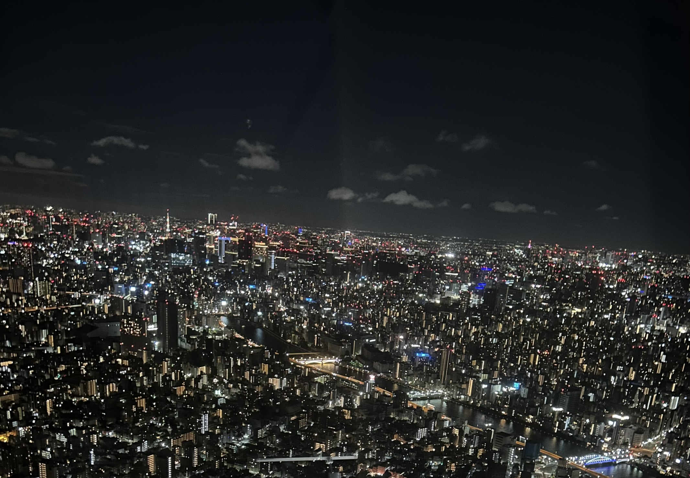

The night view of tokyo
tokyo
Tokyo is a city that never stops moving — bright, bold, and full of surprises. In Akihabara, the air buzzes with energy: glowing signs, game arcades, and endless rows of anime shops that feel like another world. Just across the city, the Tokyo Skytree rises high above it all, offering views that stretch from the glittering skyline to Mount Fuji on clear days. Tokyo is a mix of chaos and calm, where every corner has something new to discover, and the night lights feel almost alive.